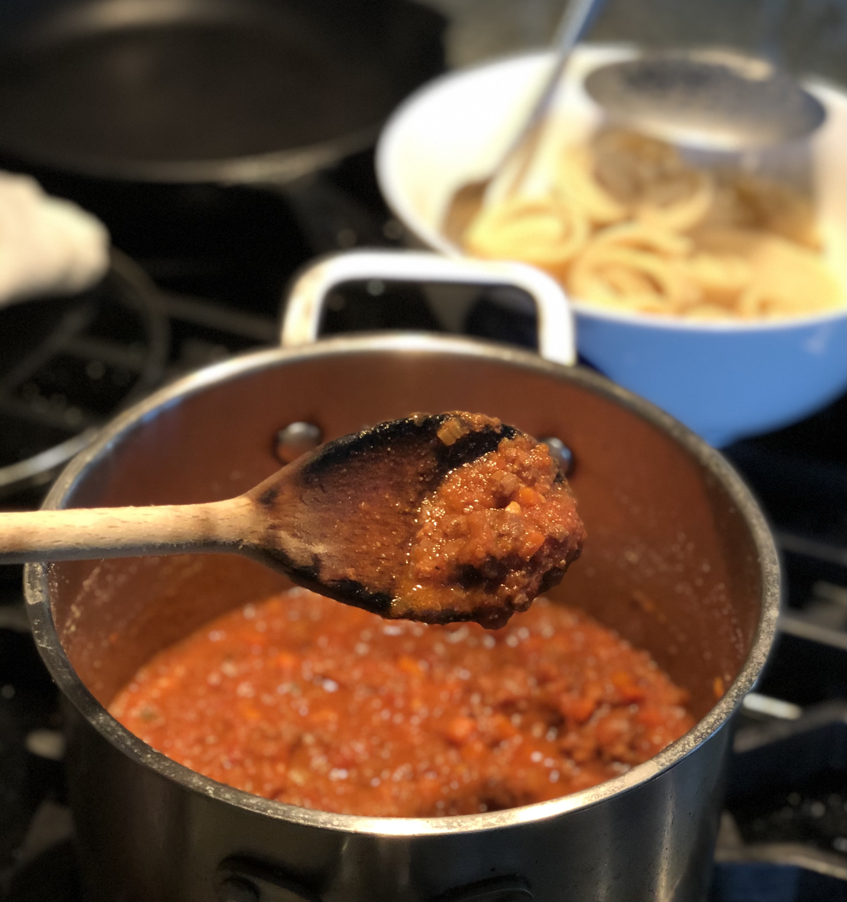

Bolognese
Home

Taste of bolognese (homemade pasta in the background)
This is my version of bolognese that I've relied on during the pandemic. It makes our home smell amazing, pairs well with wine (even during prep, and especially while cooking!). Goes great over pasta (doesn't have to be homemade), as the meat sauce in lasagna or pastitsio, or just as a topping for roasted veggies!
It's pretty straightforward, but it can take some time to prep if you chop your aromatics by hand. I've taken advantage of spices that I got from Italy, but you can recreate them pretty easily (more on that below). The hardest part is waiting while it bubbles away to concentrate the flavor, but I assure you it is well worth the wait. And no one will judge if you have to open another bottle of wine with dinner.
Here we go. Enjoy!
Ingredients
The following should be diced in roughly the same size, each making about one cup
- 1 large yellow onion
- 3-4 medium carrots
- 3-4 celery stalks
- 3 T olive oil
- 5 cloves of garlic, minced
- 3 T italian seasoning (you can make your own with granulated garlic, dried oregano, dried basil, and lots of red chili flakes)
- 1 lb ground meat (I use 20% fat ground beef, but you can mix with ground pork as well)
- 1/4 c red wine
- 1/4 c milk
- 1 large can of crushed tomatoes
- 2 T tomato paste
- 3 pieces bay leaves
- salt and pepper
- rind of parmesan (optional, but if you're like me, you've kept old parmesan rinds in the freezer for exactly this occasion)
Steps
- Heat oil over medium heat.
- Saute onions until translucent.
- Add carrots and celery. Season with S&P.
- Once veggies are soft and caramelized, add garlic. Stir then push to the side.
- Brown the meat on the surface of the pan. Season with S&P and add the italian seasoning. Avoid stirring unnecesarily to ensure the meat caramelizes nicely.
- Deglaze the pan with the wine. Make sure to scrub the browned bits off the pan.
- After the wine has evaporated, pour in the milk then stir.
- Pour in the canned tomatoes including the liquid, and the tomato paste. Season with S&P.
- Add the bay leaves, and bring to a boil. Cover and simmer over low heat for at least an hour. Stir occasionally ensuring that bottom doesn't stick or burn.
- Uncover and let the liquid boil off until you get your desired consistency (e.g., leave it a bit wet if using with no-boil lasagna noodles).